iOS人证一致客户端使用指南
人证一致流程：
第一步：打开我们安装好的 人证一致App。
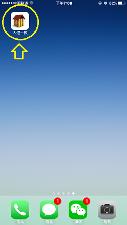
第二步：输入正确的账号密码，然后点击登录。
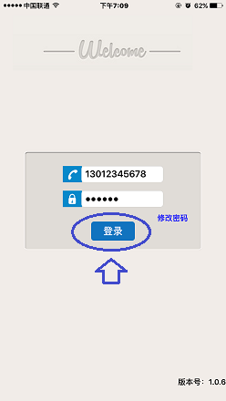
第三步：登录成功后，进入点击开始业务，开始人证一致业务。
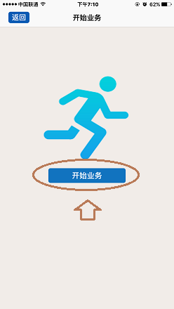
第四步：开始业务后，首先要进行条形码扫描。将条形码置于方框正中央，并保证条形码全部都处于方框内，即可完成扫描。如果遇到光线不好，或者条形不清晰、损坏等情况，可以选择手动输入条形码。
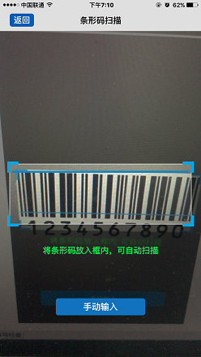
4.1一手房合同扫描位置如下：
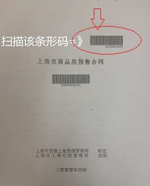
4.2二手房合同扫描位置如下：
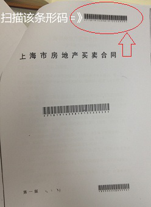
第五步：设置好条形码后，可以选择“下一步”，如果该合同号中的“暂存库”中并没有内容，则会直接跳转到“选择证件界面”，如果“暂存库”中有人，则会跳转到如下界面。
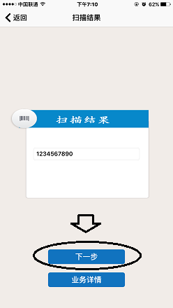
5.1 此时会继续跳转到“选择证件界面”。
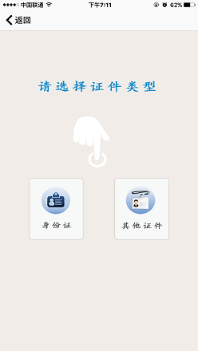
第六步：根据证件情况，选择证件类型后，进行拍摄证件照。
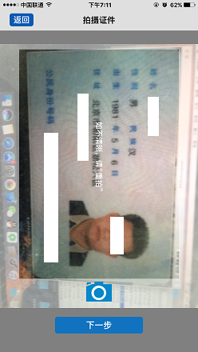
第七步：进入 “证件信息界面”，根据情况，填写和修改 “姓名”和“证件号”。完毕后，点击“下一步”。
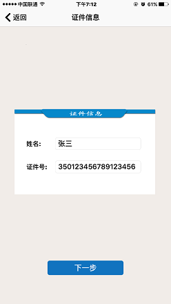
第八步：进入到“拍摄人脸界面” ，进行人脸拍照，并点击“下一步”。
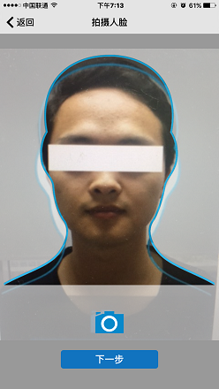
第九步：进入到“比对结果界面”，可以获取到比对结果，并将比对结果保存到“暂存库”中。比对结果如下：
9.1 “比对通过”，表示拍摄的人脸与证件照上的人脸吻合，判定为同一人。
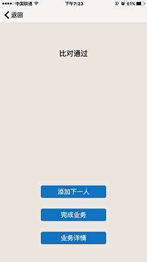
9.2 “系统判断为不同人”，表示系统判定现场照上的人脸与证件照上的人脸并非同一人。

9.3 “翻拍照，检测到多张人脸”，表示系统判定拍摄身份证照时，拍到了多张人脸，导致检测失效。
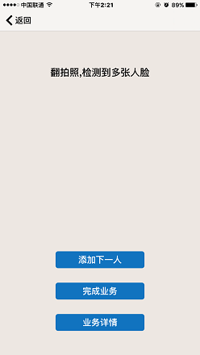
9.4 “现场照，检测到多张人脸”，表示系统判定拍摄现场照时，拍到了多张人脸，导致检测失效。
9.5 “现场照，检测人脸失败”，表示系统判定现场照中无法检测到人脸，导致检测失效。
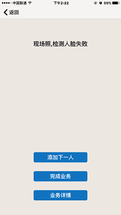
9.6 “翻拍照，检测人脸失败”，表示系统判定身份证照中无法检测到人脸，导致的失效。
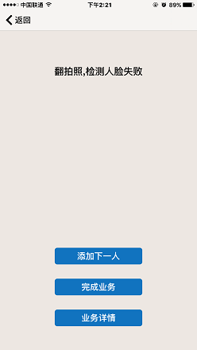
9.7 “翻拍照，质量不合格”，表示系统判定身份证照质量不合格，导致的检测失效。
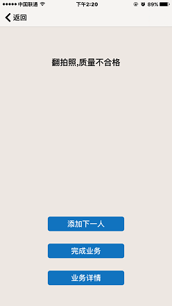
9.8 “现场照，质量不合格”，表示系统判定现场照质量不合格，导致的检测失效。
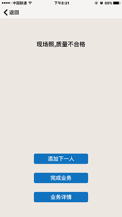
9.9 “翻拍照，格式不正确”，表示系统判定身份证照的格式不正确，导致的检测失效。
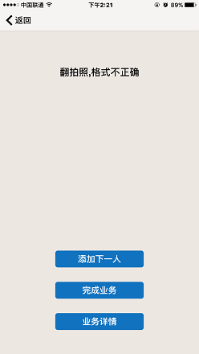
9.10 “现场照，格式不正确”，表示系统判定现场照的格式不正确，导致的检测失效。
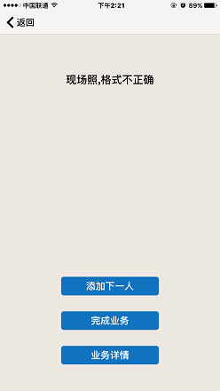
9.11 “数据保存失败”，表示因服务器内部问题导致的保存数据失败，请稍后再试，如依旧出现，请与管理员联系。
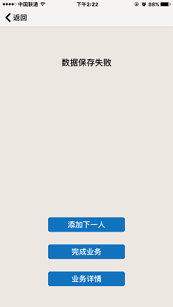
9.12 “服务器连接超时”，表示服务器内部连接比对服务超时，请稍后再试，如依旧出现，请与管理员联系。
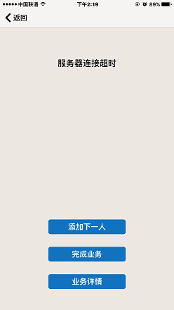
9.13 “服务器内部错误”，表示因服务器内部错误导致的检测和保存失败，请稍后再试，如依旧出现，请与管理员联系。
9.14 “网络错误，请检查网络”，请检查您的手机是否网络通畅，如确保网络通畅依然出现，请与管理员联系。
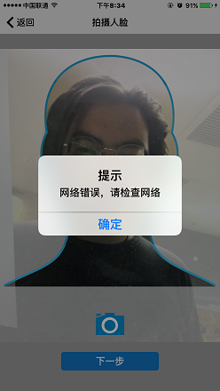
注：出现比对失败的情况，可选择返回，并重新拍摄人脸进行比对。
第十步：根据情况，选择“添加下一人”或“完成业务”，也可以查看该合同号的“业务详情”。
10.1如果选择“添加下一人”，则数据仍然会存于 “暂存库”，并继续添加下一人。
10.2如果选择“完成业务”，则数据会存入“业务库”，并跳转到“开始业务”界面。
10.3如果选择“业务详情”，则可以查看该合同号的详细情况。
附，苹果系统安装指南：
1.打开 苹果系统 自带的浏览器“Safari”。
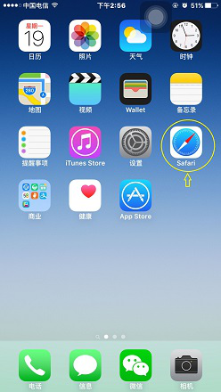
2.在浏览器中输入网址：http://218.242.60.235/CompareServer/download 并点击下载IOS版本 “人证一致”。
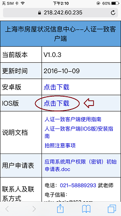
3.点击后，会弹出确认框，选择 “安装”。
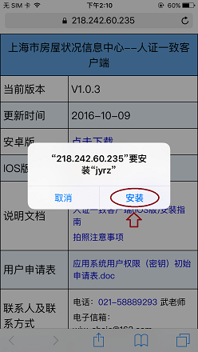
4.回到桌面，已经安装上了 “人证一致”。
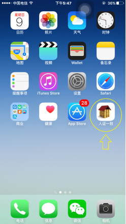
5.点击打开“人证一致”会发现无法运行，那么，我们需要让手机信任这个应用，不用着急，请继续后面操作。
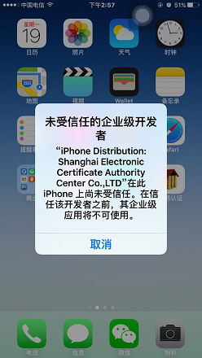
6.打开 设置 -> 通用。
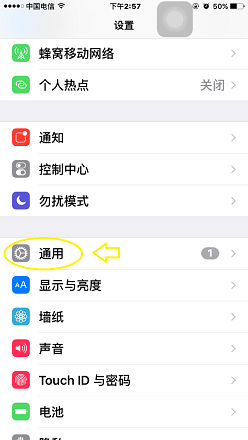
7.在“通用界面”的最下方，有一个 “描述文件与设备管理” 点进去。
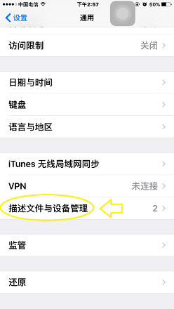
8.之后，点击如图所示的 “Shanghai Electronic Certific..”。
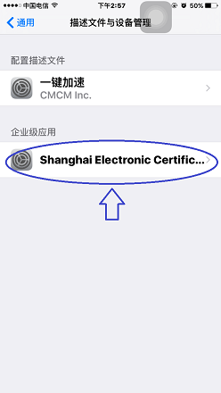
9.之后点击“信任”Shanghai Electronic Certificat..””。
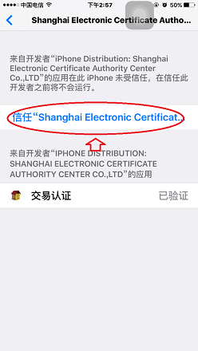
10.在弹出窗口后，点击“信任”。
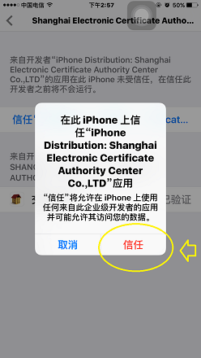
11.完成上述操作后，“人证一致”已经可以正常使用！
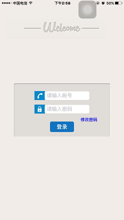